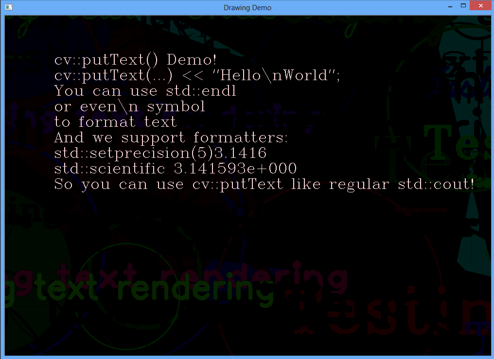

During my research and development work i often have to display a lot of text infromation on top of the OpenCV images. You know what i mean. Suppose you’re writing video stabilization algorithm. On each frame you want to display number of features visible on current frame, number of features matched with previois frame, camera motion parameters, recent twitters, name of your pet, etc.. In the OpenCV you can use cv::putText function to print formatted std::string at the desired position on the image. It’s easy when you have a fixed string that won’t change. But what should you do if you need to dynamically construct this string depending on the processing results?
For unpatinet: Here is a pull request: https://github.com/Itseez/opencv/pull/313 for this feature. In this case you have to write next:
{
std::ostringstream str;
str < < "Number of features visible:" << numFeatures;
cv::putText(image, cv::Point(10,10), str.str(), CV_FONT_HERSHEY_PLAIN, CV_RGB(0,0,250));
}
{
std::ostringstream str;
str << "Tracked features:" << trackedFeaturesCount;
cv::putText(image, cv::Point(10,30), str.str(), CV_FONT_HERSHEY_PLAIN, CV_RGB(0,0,250));
}
{
std::ostringstream str;
str << "Camera motion:" << camMotionMat;
cv::putText(image, cv::Point(10,50), str.str(), CV_FONT_HERSHEY_PLAIN, CV_RGB(0,0,250));
}
I can’t count how many times i wrote this mess. Unfortunately, cv::putText cannot deal with \n and wrap lines. Personally, i wasn’t satisfied with text output interface that OpenCV provide. So i decided to contribute a small improvement that helps to solve mentioned problems. The proposed patch allows to print text using operator< < idiom. **Printing text on the image can be done exactly as printing to std::cout:
cv::putText(image2, cv::Point(100,100), CV_FONT_HERSHEY_COMPLEX, 1, Scalar(i, i, 255))
< < "cv::putText() Demo!" << std::endl
<< "cv::putText(...) << \"Hello\\nWorld\";" << std::endl
<< "You can use std::endl" << std::endl
<< "or even\\n symbol\nto format text" << std::endl
<< "And we support formatters:\n"
<< "std::setprecision(5)" << std::setprecision(5) << CV_PI << std::endl
<< "std::scientific " << std::scientific << CV_PI << std::endl
<< "So you can use cv::putText like regular std::cout!";
The result will be:  The new cv::putText allows you to:
- Use ostream-like operator< < to print text on cv::Mat like you print “Hello world” to std::cout
- Ostream-like cv::putText supports newline (\n) character and std::endl manipulator and wraps text to the next line
- Support printing of all OpenCV types like cv::Mat, cv::Point, cv::Scalar and so on I made a pull-request to OpenCV repository on Github and i hope it will be added into the distribution soon. You can access it by following this link: https://github.com/Itseez/opencv/pull/313. You can find a demonstration of the new putText in the samples (drawing.cpp).
Implementation details
The magic begins in the new cv::putText function:
//! Creates and return image_ostream object to render text on the image like the std::cout does.
//! An image_ostream class supports operator< < for both primitive and opencv types.
static inline image_ostream putText( Mat& img, Point org,
int fontFace, double fontScale, Scalar color,
int thickness=1, int lineType=8,
bool bottomLeftOrigin=false )
{
return image_ostream(img, org, fontFace, fontScale, color, thickness, lineType, bottomLeftOrigin);
}
As you can see, the new putText function does not have string argument to print. Instead of it it returns a image_ostream object. This is a special type that behaves like the regular std::ostream class. This means you can use the same operator< < and iostream manipulators to do text printing. The main difference between std::ostream and image_ostream that the last one redirects the text output to the cv::Mat object.
//! Define the custom class that behaves like the std::basic_ostream but renders the text on the cv::Mat
class CV_EXPORTS image_ostream
{
public:
image_ostream(Mat& img, Point org, int fontFace, double fontScale, Scalar color, int thickness=1, int lineType=8, bool bottomLeftOrigin=false);
~image_ostream();
//! Defalt operator< < to take everything
template
image_ostream& operator< <(const T& x)
{
_str << x;
return *this;
}
// this is the type of std::cout
typedef std::basic_ostream<char, std::char_traits > CoutType;
// this is the function signature of std::endl
typedef CoutType& (*StandardEndLine)(CoutType&);
// define an operator< < to take in std::endl
inline image_ostream& operator<<(StandardEndLine manip)
{
// This check allows to correctly handle endline manipulator
if (manip == ::std::endl)
nextLine();
else
manip(_str);
return *this;
}
private:
void nextLine();
private:
Mat& _img;
Point _org;
int _fontFace;
double _fontScale;
Scalar _color;
int _thickness;
int _lineType;
bool _bottomLeftOrigin;
int _offset;
std::stringstream _str;
};
By overloading operator< < this class uses std::stringstream to store the internal string buffer until the end of line is encountered. Each line of text is printed on the image and cursor position is adjusted to the next line:
void image_ostream::nextLine()
{
std::string line;
do
{
std::getline(_str, line);
int baseLine;
cv::Size textSize = cv::getTextSize(line, _fontFace, _fontScale, _thickness, &baseLine;);
cv::putText(_img, line, _org + cv::Point(0, _offset), _fontFace, _fontScale, _color,_thickness, _lineType, _bottomLeftOrigin);
_offset += textSize.height + baseLine;
} while (!_str.eof());
_str = std::stringstream();
}
I hope this small improvement will help you next time you will need to print a complex-formatted text on the image using OpenCV. The pull-request for this feature is here: https://github.com/Itseez/opencv/pull/313.